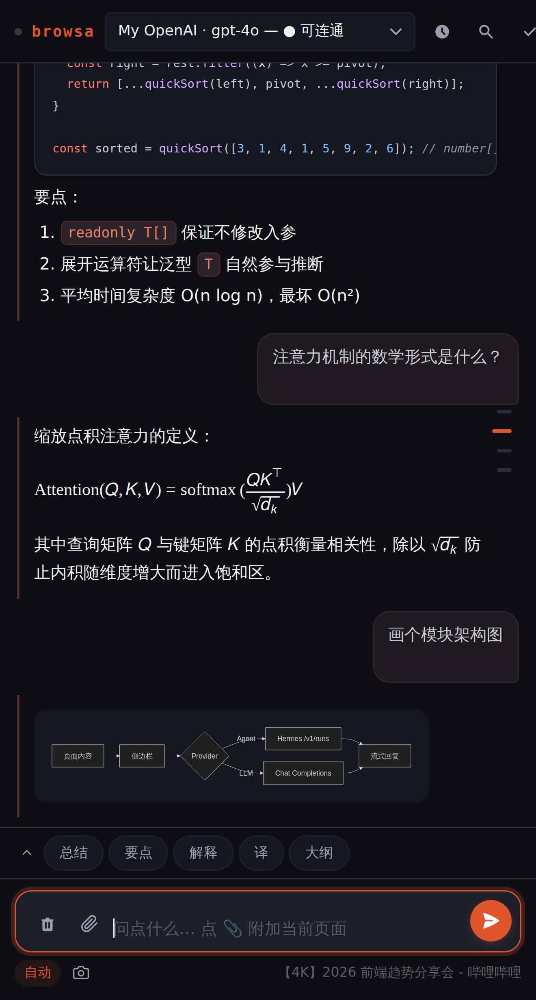

指南 / 输出与渲染
输出与渲染
回答在侧边栏里就地渲染：代码有高亮、公式能成行、图表直接画出来。 全部在本机完成，不依赖任何渲染服务。

流式回复与排队追问
回答逐字流式渲染，Esc 或点 ✕ 随时停止。流式期间你可以继续输入——消息会自动排队，当前回答一结束就依次发出，不用盯着等。
Markdown 与代码
- 完整 GFM：表格、任务列表、嵌套引用；
- 40+ 种语言的代码高亮；
diff块+标绿、-标红； - 每条回复可用 ⎘ 复制完整原始 Markdown；
- 悬停任意消息可查看发送时间。
LaTeX 公式
行内 $...$ 和块级 $$...$$ 都用 KaTeX 渲染。公式特别多的长消息会自动交给 Web Worker 渲染，面板不卡顿。
图表：流程图 · 图表 · 思维导图
直接开口要就行——「画一张这张表的流程图」「把这份大纲做成思维导图」。模型会输出对应格式的代码块，browsa 就地渲染：
```mermaid流程图 / 时序图；```echarts图表；```markmap思维导图。
每种图都带一排悬浮工具：缩放、复制源码、导出 SVG。Mermaid 画出来解析失败时，卡片上有一键按钮把它发回给你的模型修复——修好的图先在本地校验，再替换掉坏的那张。
细聊：划词开小差
选中回复里的任意一段文字，会出现「细聊」入口——围绕这段摘录开一个独立的侧边对话，随便追问，主对话的历史完全不受影响。窗口大小可调。
大纲导航
对话超过 4 轮后，侧边会出现一条安静的刻度导航：点击跳到某轮，悬停预览内容。长会话不再需要滚轮考古。
改错与重来
- ✏ 编辑并重发：改任意一条你发过的消息，从那里重新开始；
- ⟳ 重新生成：对任意一条回复重跑一次；
- 错误说明卡：提供商报错时，先给你一句人话标题（鉴权 / 限流 / 超时 / 网络 / 5xx），原始错误折叠在下面，可展开、可复制。